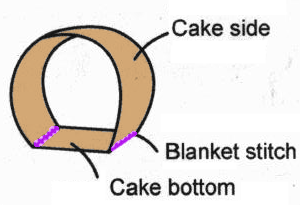

Strawberry Roll Cake
uploaded by Alice
Pattern adapted from a Chinese DIY kit. Because only azns would think about making small stuffed versions of pastries.
Difficulty: ?????
- cloth
- fabric
- magic
Find fabric stores near you!
Step 2
Sew the cake bottom to the cake sides as shown, using the blanket stitch

Warnings
Be careful of blah blah blah
Tips
Blah blah blah
Additional Help
- Blanket stitch
this is how you blanket stitch